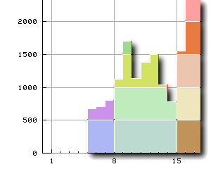

<!DOCTYPE HTML PUBLIC "-//W3C//DTD HTML 4.01 Transitional//EN">
<html lang="ja">
<head>
<title> gnuplot / webplot / index </title>
<!-- Generated 2000/ 2/17 -->
<!-- $Id: index.html,v 1.8 2004/12/04 10:02:08 kawano Exp $ -->
<meta http-equiv="content-type" content="text/html;charset=iso-2022-jp">
<link rel="stylesheet" href="../style-new.css" type="text/css">
</head>

<body>

<table width="100%" border="0" cellpadding="0" cellspacing="0">
<tr><td bgcolor="#cccc90" width="320">
    <div align="left">
    <a href="../index.html">
    
    </a></div></td>
    <td bgcolor="#cccc90">
      <div align="center"><h3> - not so Frequently Asked Questions - </h3> </div>
      <div class="update"> update 2004/11/29 </div>
    </td>
</tr>
<tr><td bgcolor="#fae8ba"></td>
    <td bgcolor="#fae8ba"><div class="navi"> 
<a href="../index.html">          HOME </a> |
<a href="../intro/index.html">    INTRODUCTION </a> |
<a href="../general.html">        INFORMATION </a> |
<a href="../gallery/index.html">  GALLERY </a> |
<a href="index-e.html">           ENGLISH </a>
</div></td></tr>
</table>
<hr class="topsep">


<table width="100%" border="0" cellpadding="0" cellspacing="0">
<tr><td id="menu">
 <p> <a href="index.html">   WWW Access Log  </a></p>

 <ul>
  <li><a href="access_log.html"> access_log$B$N2r@O!&=87W(B </a>
  <li> $B=87W7k2L$N%W%m%C%H(B
   <ul>
    <li><a href="access_plot.html">$BDj4|E*$K=87W(B </a> 
    <li><a href="access_cgi.html"> CGI$B$F=87W(B </a>
   </ul>
 </ul>
</td>

<td id="content">

<h1> WWW Access Log$B$N4JC1$J%0%i%U2=(B </h1>



<p> $B$3$3$G$O!$(Bgnuplot$B$r(BWWW$B$G;H$&4JC1$JJ}K!$H$7$F!$(BWWW Server$B$N(Blog file 
$B$r=87W$7$F?^$K$9$kJ}K!$r<h$j>e$2$^$9!%(BHTTP Server$B$H$7$F(B<a
href="http://www.apache.org/">Apache</a>$B$rA[Dj$7$F$$$^$9!%$3$N(Blog$B%U%!(B
$B%$%k$r(Bperl$B$G=hM}$7$?8e!$(Bgnuplot$B$r;H$C$F%5!<%P$X$N%"%/%;%9$NE}7W$r?^<((B
$B$7$F$_$^$7$g$&!%$3$3$G$NJ}K!$O!$%F%-%9%H%U%!%$%k$KJ]B8$5$l$??tCM%G!<%?(B
$B$r(Bperl$B$G=hM}$7!$<+F0E*$K%0%i%U$N2hA|$r:n@.$9$k$N$K1~MQ$G$-$^$9!%(B</p>

<ul>
<li><a href="access_log.html"> httpd access_log$B$N2r@O!&=87W(B </a>
<li> $B=87W7k2L$N%W%m%C%H(B
    <ul>
        <li><a href="access_plot.html">$BDj4|E*$K=87W7k2L$r%W%m%C%H$7$F$*$/J}K!(B </a> 
        <li><a href="access_cgi.html"> CGI$B$r;H$C$FKh2s=87W$9$kJ}K!(B </a>
    </ul>
</ul>
</td></tr></table>
<hr class="topsep">

</body>
</html>
